Webinar for the ISDS R Group
This document presents the code I used to produce the example analysis and figures shown in my webinar on building meaningful machine learning models for disease prediction.
My webinar slides are available on Github
Description: Dr Shirin Glander will go over her work on building machine-learning models to predict the course of different diseases. She will go over building a model, evaluating its performance, and answering or addressing different disease related questions using machine learning. Her talk will cover the theory of machine learning as it is applied using R.
Setup
All analyses are done in R using RStudio. For detailed session information including R version, operating system and package versions, see the sessionInfo() output at the end of this document.
All figures are produced with ggplot2.
The dataset
The dataset I am using in these example analyses, is the Breast Cancer Wisconsin (Diagnostic) Dataset. The data was downloaded from the UC Irvine Machine Learning Repository.
The first dataset looks at the predictor classes:
- malignant or
- benign breast mass.
The features characterize cell nucleus properties and were generated from image analysis of fine needle aspirates (FNA) of breast masses:
- Sample ID (code number)
- Clump thickness
- Uniformity of cell size
- Uniformity of cell shape
- Marginal adhesion
- Single epithelial cell size
- Number of bare nuclei
- Bland chromatin
- Number of normal nuclei
- Mitosis
- Classes, i.e. diagnosis
bc_data <- read.table("datasets/breast-cancer-wisconsin.data.txt",
header = FALSE,
sep = ",")
colnames(bc_data) <- c("sample_code_number",
"clump_thickness",
"uniformity_of_cell_size",
"uniformity_of_cell_shape",
"marginal_adhesion",
"single_epithelial_cell_size",
"bare_nuclei",
"bland_chromatin",
"normal_nucleoli",
"mitosis",
"classes")
bc_data$classes <- ifelse(bc_data$classes == "2", "benign",
ifelse(bc_data$classes == "4", "malignant", NA))
Missing data
bc_data[bc_data == "?"] <- NA
# how many NAs are in the data
length(which(is.na(bc_data)))
## [1] 16
# how many samples would we loose, if we removed them?
nrow(bc_data)
## [1] 699
nrow(bc_data[is.na(bc_data), ])
## [1] 16
Missing values are imputed with the mice package.
# impute missing data
library(mice)
bc_data[,2:10] <- apply(bc_data[, 2:10], 2, function(x) as.numeric(as.character(x)))
dataset_impute <- mice(bc_data[, 2:10], print = FALSE)
bc_data <- cbind(bc_data[, 11, drop = FALSE], mice::complete(dataset_impute, 1))
bc_data$classes <- as.factor(bc_data$classes)
# how many benign and malignant cases are there?
summary(bc_data$classes)
Data exploration
- Response variable for classification
library(ggplot2)
ggplot(bc_data, aes(x = classes, fill = classes)) +
geom_bar()
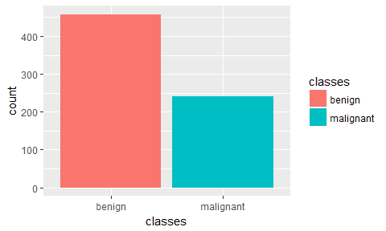
We can see that our data is unbalanced. For simplicity’s sake, I am not going to go into how to deal with this, here. But I added a short post about dealing with unbalanced datasets using caret for you to check out.
- Response variable for regression
ggplot(bc_data, aes(x = clump_thickness)) +
geom_histogram(bins = 10)

- Principal Component Analysis
library(pcaGoPromoter)
library(ellipse)
# perform pca and extract scores
pcaOutput <- pca(t(bc_data[, -1]), printDropped = FALSE, scale = TRUE, center = TRUE)
pcaOutput2 <- as.data.frame(pcaOutput$scores)
# define groups for plotting
pcaOutput2$groups <- bc_data$classes
centroids <- aggregate(cbind(PC1, PC2) ~ groups, pcaOutput2, mean)
conf.rgn <- do.call(rbind, lapply(unique(pcaOutput2$groups), function(t)
data.frame(groups = as.character(t),
ellipse(cov(pcaOutput2[pcaOutput2$groups == t, 1:2]),
centre = as.matrix(centroids[centroids$groups == t, 2:3]),
level = 0.95),
stringsAsFactors = FALSE)))
ggplot(data = pcaOutput2, aes(x = PC1, y = PC2, group = groups, color = groups)) +
geom_polygon(data = conf.rgn, aes(fill = groups), alpha = 0.2) +
geom_point(size = 2, alpha = 0.6) +
scale_color_brewer(palette = "Set1") +
labs(color = "",
fill = "",
x = paste0("PC1: ", round(pcaOutput$pov[1], digits = 2) * 100, "% variance"),
y = paste0("PC2: ", round(pcaOutput$pov[2], digits = 2) * 100, "% variance"))

- Features
library(tidyr)
gather(bc_data, x, y, clump_thickness:mitosis) %>%
ggplot(aes(x = y, color = classes, fill = classes)) +
geom_density(alpha = 0.3) +
facet_wrap( ~ x, scales = "free", ncol = 3)

Machine Learning packages for R
caret
# configure multicore
library(doParallel)
cl <- makeCluster(detectCores())
registerDoParallel(cl)
library(caret)
Training, validation and test data
set.seed(42)
index <- createDataPartition(bc_data$classes, p = 0.7, list = FALSE)
train_data <- bc_data[index, ]
test_data <- bc_data[-index, ]
library(dplyr)
rbind(data.frame(group = "train", train_data),
data.frame(group = "test", test_data)) %>%
gather(x, y, clump_thickness:mitosis) %>%
ggplot(aes(x = y, color = group, fill = group)) +
geom_density(alpha = 0.3) +
facet_wrap( ~ x, scales = "free", ncol = 3)
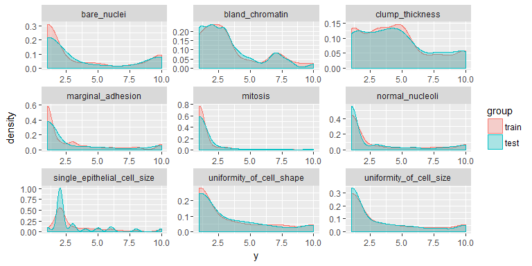
Regression
set.seed(42)
model_glm <- caret::train(clump_thickness ~ .,
data = train_data,
method = "glm",
preProcess = c("scale", "center"),
trControl = trainControl(method = "repeatedcv",
number = 10,
repeats = 10,
savePredictions = TRUE,
verboseIter = FALSE))
model_glm
## Generalized Linear Model
##
## 490 samples
## 9 predictor
##
## Pre-processing: scaled (9), centered (9)
## Resampling: Cross-Validated (10 fold, repeated 10 times)
## Summary of sample sizes: 441, 441, 440, 442, 441, 440, ...
## Resampling results:
##
## RMSE Rsquared
## 1.974296 0.5016141
##
##
predictions <- predict(model_glm, test_data)
# model_glm$finalModel$linear.predictors == model_glm$finalModel$fitted.values
data.frame(residuals = resid(model_glm),
predictors = model_glm$finalModel$linear.predictors) %>%
ggplot(aes(x = predictors, y = residuals)) +
geom_jitter() +
geom_smooth(method = "lm")

# y == train_data$clump_thickness
data.frame(residuals = resid(model_glm),
y = model_glm$finalModel$y) %>%
ggplot(aes(x = y, y = residuals)) +
geom_jitter() +
geom_smooth(method = "lm")

data.frame(actual = test_data$clump_thickness,
predicted = predictions) %>%
ggplot(aes(x = actual, y = predicted)) +
geom_jitter() +
geom_smooth(method = "lm")

Classification
Decision trees
library(rpart)
library(rpart.plot)
set.seed(42)
fit <- rpart(classes ~ .,
data = train_data,
method = "class",
control = rpart.control(xval = 10,
minbucket = 2,
cp = 0),
parms = list(split = "information"))
rpart.plot(fit, extra = 100)

Random Forests
Random Forests predictions are based on the generation of multiple classification trees. They can be used for both, classification and regression tasks. Here, I show a classification task.
set.seed(42)
model_rf <- caret::train(classes ~ .,
data = train_data,
method = "rf",
preProcess = c("scale", "center"),
trControl = trainControl(method = "repeatedcv",
number = 10,
repeats = 10,
savePredictions = TRUE,
verboseIter = FALSE))
When you specify savePredictions = TRUE, you can access the cross-validation resuls with model_rf$pred.
model_rf$finalModel$confusion
## benign malignant class.error
## benign 313 8 0.02492212
## malignant 4 165 0.02366864
- Feature Importance
imp <- model_rf$finalModel$importance
imp[order(imp, decreasing = TRUE), ]
## uniformity_of_cell_size uniformity_of_cell_shape
## 54.416003 41.553022
## bland_chromatin bare_nuclei
## 29.343027 28.483842
## normal_nucleoli single_epithelial_cell_size
## 19.239635 18.480155
## clump_thickness marginal_adhesion
## 13.276702 12.143355
## mitosis
## 3.081635
# estimate variable importance
importance <- varImp(model_rf, scale = TRUE)
plot(importance)

- predicting test data
confusionMatrix(predict(model_rf, test_data), test_data$classes)
## Confusion Matrix and Statistics
##
## Reference
## Prediction benign malignant
## benign 133 2
## malignant 4 70
##
## Accuracy : 0.9713
## 95% CI : (0.9386, 0.9894)
## No Information Rate : 0.6555
## P-Value [Acc > NIR] : <2e-16
##
## Kappa : 0.9369
## Mcnemar's Test P-Value : 0.6831
##
## Sensitivity : 0.9708
## Specificity : 0.9722
## Pos Pred Value : 0.9852
## Neg Pred Value : 0.9459
## Prevalence : 0.6555
## Detection Rate : 0.6364
## Detection Prevalence : 0.6459
## Balanced Accuracy : 0.9715
##
## 'Positive' Class : benign
##
results <- data.frame(actual = test_data$classes,
predict(model_rf, test_data, type = "prob"))
results$prediction <- ifelse(results$benign > 0.5, "benign",
ifelse(results$malignant > 0.5, "malignant", NA))
results$correct <- ifelse(results$actual == results$prediction, TRUE, FALSE)
ggplot(results, aes(x = prediction, fill = correct)) +
geom_bar(position = "dodge")
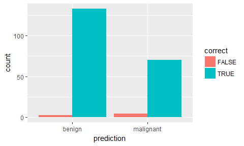
ggplot(results, aes(x = prediction, y = benign, color = correct, shape = correct)) +
geom_jitter(size = 3, alpha = 0.6)

Extreme gradient boosting trees
Extreme gradient boosting (XGBoost) is a faster and improved implementation of gradient boosting for supervised learning.
“XGBoost uses a more regularized model formalization to control over-fitting, which gives it better performance.” Tianqi Chen, developer of xgboost
XGBoost is a tree ensemble model, which means the sum of predictions from a set of classification and regression trees (CART). In that, XGBoost is similar to Random Forests but it uses a different approach to model training. Can be used for classification and regression tasks. Here, I show a classification task.
set.seed(42)
model_xgb <- caret::train(classes ~ .,
data = train_data,
method = "xgbTree",
preProcess = c("scale", "center"),
trControl = trainControl(method = "repeatedcv",
number = 10,
repeats = 10,
savePredictions = TRUE,
verboseIter = FALSE))
- Feature Importance
importance <- varImp(model_xgb, scale = TRUE)
plot(importance)

- predicting test data
confusionMatrix(predict(model_xgb, test_data), test_data$classes)
## Confusion Matrix and Statistics
##
## Reference
## Prediction benign malignant
## benign 132 2
## malignant 5 70
##
## Accuracy : 0.9665
## 95% CI : (0.9322, 0.9864)
## No Information Rate : 0.6555
## P-Value [Acc > NIR] : <2e-16
##
## Kappa : 0.9266
## Mcnemar's Test P-Value : 0.4497
##
## Sensitivity : 0.9635
## Specificity : 0.9722
## Pos Pred Value : 0.9851
## Neg Pred Value : 0.9333
## Prevalence : 0.6555
## Detection Rate : 0.6316
## Detection Prevalence : 0.6411
## Balanced Accuracy : 0.9679
##
## 'Positive' Class : benign
##
results <- data.frame(actual = test_data$classes,
predict(model_xgb, test_data, type = "prob"))
results$prediction <- ifelse(results$benign > 0.5, "benign",
ifelse(results$malignant > 0.5, "malignant", NA))
results$correct <- ifelse(results$actual == results$prediction, TRUE, FALSE)
ggplot(results, aes(x = prediction, fill = correct)) +
geom_bar(position = "dodge")

ggplot(results, aes(x = prediction, y = benign, color = correct, shape = correct)) +
geom_jitter(size = 3, alpha = 0.6)

Feature Selection
Performing feature selection on the whole dataset would lead to prediction bias, we therefore need to run the whole modeling process on the training data alone!
- Correlation
Correlations between all features are calculated and visualised with the corrplot package. I am then removing all features with a correlation higher than 0.7, keeping the feature with the lower mean.
library(corrplot)
# calculate correlation matrix
corMatMy <- cor(train_data[, -1])
corrplot(corMatMy, order = "hclust")

#Apply correlation filter at 0.70,
highlyCor <- colnames(train_data[, -1])[findCorrelation(corMatMy, cutoff = 0.7, verbose = TRUE)]
## Compare row 2 and column 3 with corr 0.899
## Means: 0.696 vs 0.575 so flagging column 2
## Compare row 3 and column 7 with corr 0.736
## Means: 0.654 vs 0.55 so flagging column 3
## All correlations <= 0.7
# which variables are flagged for removal?
highlyCor
## [1] "uniformity_of_cell_size" "uniformity_of_cell_shape"
#then we remove these variables
train_data_cor <- train_data[, which(!colnames(train_data) %in% highlyCor)]
- Recursive Feature Elimination (RFE)
Another way to choose features is with Recursive Feature Elimination. RFE uses a Random Forest algorithm to test combinations of features and rate each with an accuracy score. The combination with the highest score is usually preferential.
set.seed(7)
results_rfe <- rfe(x = train_data[, -1],
y = train_data$classes,
sizes = c(1:9),
rfeControl = rfeControl(functions = rfFuncs, method = "cv", number = 10))
# chosen features
predictors(results_rfe)
## [1] "bare_nuclei" "uniformity_of_cell_size"
## [3] "clump_thickness" "uniformity_of_cell_shape"
## [5] "bland_chromatin" "marginal_adhesion"
## [7] "normal_nucleoli" "single_epithelial_cell_size"
## [9] "mitosis"
train_data_rfe <- train_data[, c(1, which(colnames(train_data) %in% predictors(results_rfe)))]
- Genetic Algorithm (GA)
The Genetic Algorithm (GA) has been developed based on evolutionary principles of natural selection: It aims to optimize a population of individuals with a given set of genotypes by modeling selection over time. In each generation (i.e. iteration), each individual’s fitness is calculated based on their genotypes. Then, the fittest individuals are chosen to produce the next generation. This subsequent generation of individuals will have genotypes resulting from (re-) combinations of the parental alleles. These new genotypes will again determine each individual’s fitness. This selection process is iterated for a specified number of generations and (ideally) leads to fixation of the fittest alleles in the gene pool.
This concept of optimization can be applied to non-evolutionary models as well, like feature selection processes in machine learning.
set.seed(27)
model_ga <- gafs(x = train_data[, -1],
y = train_data$classes,
iters = 10, # generations of algorithm
popSize = 10, # population size for each generation
levels = c("malignant", "benign"),
gafsControl = gafsControl(functions = rfGA, # Assess fitness with RF
method = "cv", # 10 fold cross validation
genParallel = TRUE, # Use parallel programming
allowParallel = TRUE))
plot(model_ga) # Plot mean fitness (AUC) by generation
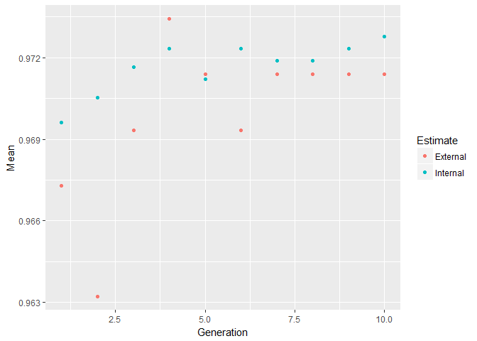
train_data_ga <- train_data[, c(1, which(colnames(train_data) %in% model_ga$ga$final))]
Grid search with caret
- Automatic Grid
set.seed(42)
model_rf_tune_auto <- caret::train(classes ~ .,
data = train_data,
method = "rf",
preProcess = c("scale", "center"),
trControl = trainControl(method = "repeatedcv",
number = 10,
repeats = 10,
savePredictions = TRUE,
verboseIter = FALSE,
search = "random"),
tuneLength = 15)
model_rf_tune_auto
## Random Forest
##
## 490 samples
## 9 predictor
## 2 classes: 'benign', 'malignant'
##
## Pre-processing: scaled (9), centered (9)
## Resampling: Cross-Validated (10 fold, repeated 10 times)
## Summary of sample sizes: 442, 441, 441, 441, 441, 441, ...
## Resampling results across tuning parameters:
##
## mtry Accuracy Kappa
## 1 0.9692153 0.9323624
## 2 0.9704277 0.9350498
## 5 0.9645085 0.9216721
## 6 0.9639087 0.9201998
## 7 0.9632842 0.9186919
## 8 0.9626719 0.9172257
## 9 0.9636801 0.9195036
##
## Accuracy was used to select the optimal model using the largest value.
## The final value used for the model was mtry = 2.
plot(model_rf_tune_auto)
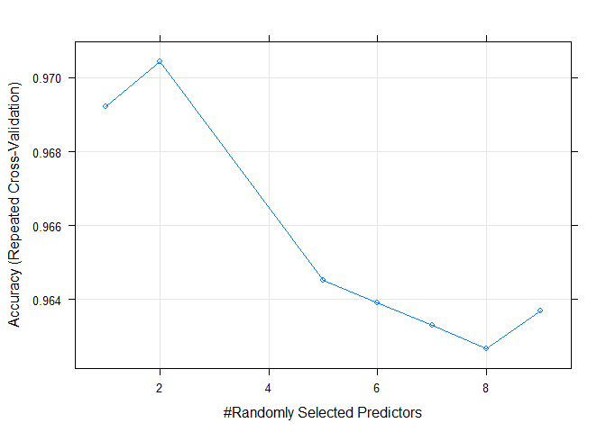
-
Manual Grid
-
mtry: Number of variables randomly sampled as candidates at each split.
set.seed(42)
grid <- expand.grid(mtry = c(1:10))
model_rf_tune_man <- caret::train(classes ~ .,
data = train_data,
method = "rf",
preProcess = c("scale", "center"),
trControl = trainControl(method = "repeatedcv",
number = 10,
repeats = 10,
savePredictions = TRUE,
verboseIter = FALSE,
search = "random"),
tuneGrid = grid)
model_rf_tune_man
## Random Forest
##
## 490 samples
## 9 predictor
## 2 classes: 'benign', 'malignant'
##
## Pre-processing: scaled (9), centered (9)
## Resampling: Cross-Validated (10 fold, repeated 10 times)
## Summary of sample sizes: 442, 441, 441, 441, 441, 441, ...
## Resampling results across tuning parameters:
##
## mtry Accuracy Kappa
## 1 0.9696153 0.9332392
## 2 0.9706440 0.9354737
## 3 0.9696194 0.9330647
## 4 0.9661495 0.9253163
## 5 0.9649252 0.9225586
## 6 0.9653209 0.9233806
## 7 0.9634881 0.9192265
## 8 0.9624718 0.9169227
## 9 0.9641005 0.9203072
## 10 0.9628760 0.9176675
##
## Accuracy was used to select the optimal model using the largest value.
## The final value used for the model was mtry = 2.
plot(model_rf_tune_man)

Grid search with h2o
The R package h2o provides a convenient interface to H2O, which is an open-source machine learning and deep learning platform. H2O distributes a wide range of common machine learning algorithms for classification, regression and deep learning.
library(h2o)
h2o.init(nthreads = -1)
##
## H2O is not running yet, starting it now...
##
## Note: In case of errors look at the following log files:
## C:\Users\s_glan02\AppData\Local\Temp\RtmpwDqf33/h2o_s_glan02_started_from_r.out
## C:\Users\s_glan02\AppData\Local\Temp\RtmpwDqf33/h2o_s_glan02_started_from_r.err
##
##
## Starting H2O JVM and connecting: . Connection successful!
##
## R is connected to the H2O cluster:
## H2O cluster uptime: 1 seconds 815 milliseconds
## H2O cluster version: 3.10.3.6
## H2O cluster version age: 1 month and 10 days
## H2O cluster name: H2O_started_from_R_s_glan02_tvy462
## H2O cluster total nodes: 1
## H2O cluster total memory: 3.54 GB
## H2O cluster total cores: 8
## H2O cluster allowed cores: 8
## H2O cluster healthy: TRUE
## H2O Connection ip: localhost
## H2O Connection port: 54321
## H2O Connection proxy: NA
## R Version: R version 3.3.3 (2017-03-06)
bc_data_hf <- as.h2o(bc_data)
##
|
| | 0%
|
|=================================================================| 100%
h2o.describe(bc_data_hf) %>%
gather(x, y, Zeros:Sigma) %>%
mutate(group = ifelse(x %in% c("Min", "Max", "Mean"), "min, mean, max",
ifelse(x %in% c("NegInf", "PosInf"), "Inf", "sigma, zeros"))) %>%
ggplot(aes(x = Label, y = as.numeric(y), color = x)) +
geom_point(size = 4, alpha = 0.6) +
scale_color_brewer(palette = "Set1") +
theme(axis.text.x = element_text(angle = 45, vjust = 1, hjust = 1)) +
facet_grid(group ~ ., scales = "free") +
labs(x = "Feature",
y = "Value",
color = "")

library(reshape2) # for melting
bc_data_hf[, 1] <- h2o.asfactor(bc_data_hf[, 1])
cor <- h2o.cor(bc_data_hf)
rownames(cor) <- colnames(cor)
melt(cor) %>%
mutate(Var2 = rep(rownames(cor), nrow(cor))) %>%
mutate(Var2 = factor(Var2, levels = colnames(cor))) %>%
mutate(variable = factor(variable, levels = colnames(cor))) %>%
ggplot(aes(x = variable, y = Var2, fill = value)) +
geom_tile(width = 0.9, height = 0.9) +
scale_fill_gradient2(low = "white", high = "red", name = "Cor.") +
theme(axis.text.x = element_text(angle = 90, vjust = 0.5, hjust = 1)) +
labs(x = "",
y = "")

Training, validation and test data
splits <- h2o.splitFrame(bc_data_hf,
ratios = c(0.7, 0.15),
seed = 1)
train <- splits[[1]]
valid <- splits[[2]]
test <- splits[[3]]
response <- "classes"
features <- setdiff(colnames(train), response)
summary(train$classes, exact_quantiles = TRUE)
## classes
## benign :317
## malignant:174
summary(valid$classes, exact_quantiles = TRUE)
## classes
## benign :71
## malignant:35
summary(test$classes, exact_quantiles = TRUE)
## classes
## benign :70
## malignant:32
pca <- h2o.prcomp(training_frame = train,
x = features,
validation_frame = valid,
transform = "NORMALIZE",
impute_missing = TRUE,
k = 3,
seed = 42)
##
|
| | 0%
|
|==================================================== | 80%
|
|=================================================================| 100%
eigenvec <- as.data.frame(pca@model$eigenvectors)
eigenvec$label <- features
library(ggrepel)
ggplot(eigenvec, aes(x = pc1, y = pc2, label = label)) +
geom_point(color = "navy", alpha = 0.7) +
geom_text_repel()
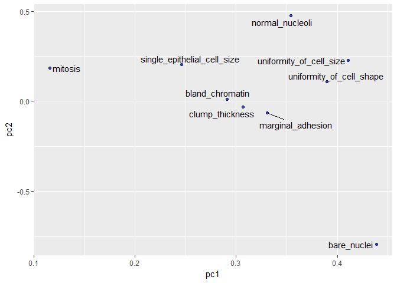
Classification
Random Forest
hyper_params <- list(
ntrees = c(25, 50, 75, 100),
max_depth = c(10, 20, 30),
min_rows = c(1, 3, 5)
)
search_criteria <- list(
strategy = "RandomDiscrete",
max_models = 50,
max_runtime_secs = 360,
stopping_rounds = 5,
stopping_metric = "AUC",
stopping_tolerance = 0.0005,
seed = 42
)
rf_grid <- h2o.grid(algorithm = "randomForest", # h2o.randomForest,
# alternatively h2o.gbm
# for Gradient boosting trees
x = features,
y = response,
grid_id = "rf_grid",
training_frame = train,
validation_frame = valid,
nfolds = 25,
fold_assignment = "Stratified",
hyper_params = hyper_params,
search_criteria = search_criteria,
seed = 42
)
# performance metrics where smaller is better -> order with decreasing = FALSE
sort_options_1 <- c("mean_per_class_error", "mse", "err", "logloss")
for (sort_by_1 in sort_options_1) {
grid <- h2o.getGrid("rf_grid", sort_by = sort_by_1, decreasing = FALSE)
model_ids <- grid@model_ids
best_model <- h2o.getModel(model_ids[[1]])
h2o.saveModel(best_model, path="models", force = TRUE)
}
# performance metrics where bigger is better -> order with decreasing = TRUE
sort_options_2 <- c("auc", "precision", "accuracy", "recall", "specificity")
for (sort_by_2 in sort_options_2) {
grid <- h2o.getGrid("rf_grid", sort_by = sort_by_2, decreasing = TRUE)
model_ids <- grid@model_ids
best_model <- h2o.getModel(model_ids[[1]])
h2o.saveModel(best_model, path = "models", force = TRUE)
}
files <- list.files(path = "models")
rf_models <- files[grep("rf_grid_model", files)]
for (model_id in rf_models) {
path <- paste0("U:\\Github_blog\\Webinar\\Webinar_ML_for_disease\\models\\", model_id)
best_model <- h2o.loadModel(path)
mse_auc_test <- data.frame(model_id = model_id,
mse = h2o.mse(h2o.performance(best_model, test)),
auc = h2o.auc(h2o.performance(best_model, test)))
if (model_id == rf_models[[1]]) {
mse_auc_test_comb <- mse_auc_test
} else {
mse_auc_test_comb <- rbind(mse_auc_test_comb, mse_auc_test)
}
}
mse_auc_test_comb %>%
gather(x, y, mse:auc) %>%
ggplot(aes(x = model_id, y = y, fill = model_id)) +
facet_grid(x ~ ., scales = "free") +
geom_bar(stat = "identity", alpha = 0.8, position = "dodge") +
scale_fill_brewer(palette = "Set1") +
theme(axis.text.x = element_text(angle = 45, vjust = 1, hjust = 1),
plot.margin = unit(c(0.5, 0, 0, 1.5), "cm")) +
labs(x = "", y = "value", fill = "")

for (model_id in rf_models) {
best_model <- h2o.getModel(model_id)
finalRf_predictions <- data.frame(model_id = rep(best_model@model_id,
nrow(test)),
actual = as.vector(test$classes),
as.data.frame(h2o.predict(object = best_model,
newdata = test)))
finalRf_predictions$accurate <- ifelse(finalRf_predictions$actual ==
finalRf_predictions$predict,
"yes", "no")
finalRf_predictions$predict_stringent <- ifelse(finalRf_predictions$benign > 0.8,
"benign",
ifelse(finalRf_predictions$malignant
> 0.8, "malignant", "uncertain"))
finalRf_predictions$accurate_stringent <- ifelse(finalRf_predictions$actual ==
finalRf_predictions$predict_stringent, "yes",
ifelse(finalRf_predictions$predict_stringent ==
"uncertain", "na", "no"))
if (model_id == rf_models[[1]]) {
finalRf_predictions_comb <- finalRf_predictions
} else {
finalRf_predictions_comb <- rbind(finalRf_predictions_comb, finalRf_predictions)
}
}
##
|
| | 0%
|
|=================================================================| 100%
##
|
| | 0%
|
|=================================================================| 100%
##
|
| | 0%
|
|=================================================================| 100%
finalRf_predictions_comb %>%
ggplot(aes(x = actual, fill = accurate)) +
geom_bar(position = "dodge") +
scale_fill_brewer(palette = "Set1") +
facet_wrap(~ model_id, ncol = 3) +
labs(fill = "Were\npredictions\naccurate?",
title = "Default predictions")

finalRf_predictions_comb %>%
subset(accurate_stringent != "na") %>%
ggplot(aes(x = actual, fill = accurate_stringent)) +
geom_bar(position = "dodge") +
scale_fill_brewer(palette = "Set1") +
facet_wrap(~ model_id, ncol = 3) +
labs(fill = "Were\npredictions\naccurate?",
title = "Stringent predictions")
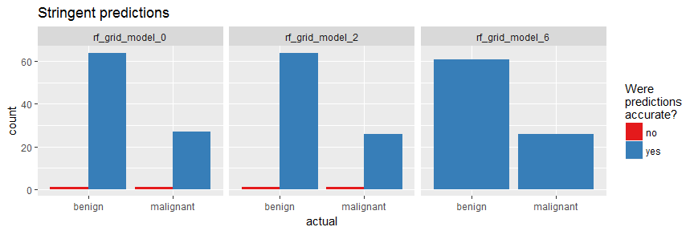
rf_model <- h2o.loadModel("models/rf_grid_model_6")
h2o.varimp_plot(rf_model)
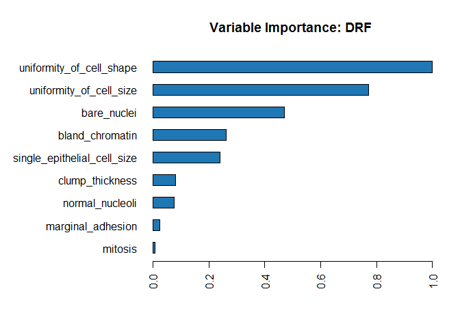
#h2o.varimp(rf_model)
h2o.mean_per_class_error(rf_model, train = TRUE, valid = TRUE, xval = TRUE)
## train valid xval
## 0.024674571 0.007042254 0.023097284
h2o.confusionMatrix(rf_model, valid = TRUE)
## Confusion Matrix (vertical: actual; across: predicted) for max f1 @ threshold = 0.293125896751881:
## benign malignant Error Rate
## benign 70 1 0.014085 =1/71
## malignant 0 35 0.000000 =0/35
## Totals 70 36 0.009434 =1/106
plot(rf_model,
timestep = "number_of_trees",
metric = "classification_error")

plot(rf_model,
timestep = "number_of_trees",
metric = "logloss")
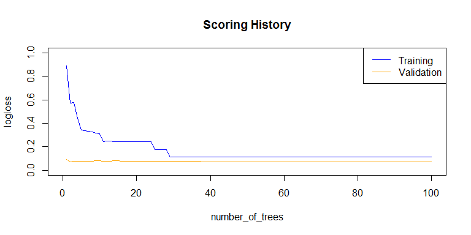
plot(rf_model,
timestep = "number_of_trees",
metric = "AUC")
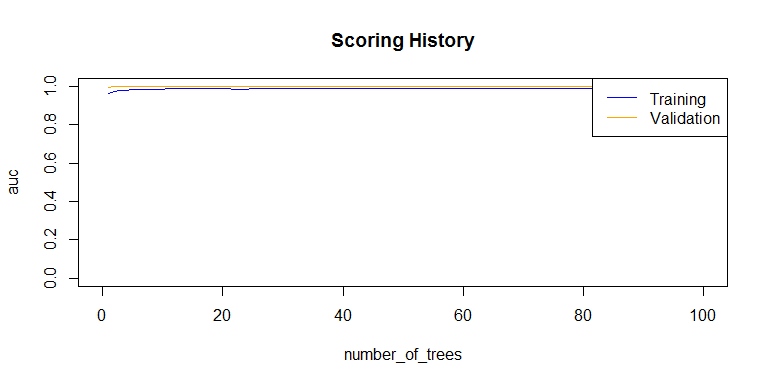
plot(rf_model,
timestep = "number_of_trees",
metric = "rmse")

h2o.auc(rf_model, train = TRUE)
## [1] 0.989521
h2o.auc(rf_model, valid = TRUE)
## [1] 0.9995976
h2o.auc(rf_model, xval = TRUE)
## [1] 0.9890496
perf <- h2o.performance(rf_model, test)
perf
## H2OBinomialMetrics: drf
##
## MSE: 0.03673598
## RMSE: 0.1916663
## LogLoss: 0.1158835
## Mean Per-Class Error: 0.0625
## AUC: 0.990625
## Gini: 0.98125
##
## Confusion Matrix (vertical: actual; across: predicted) for F1-optimal threshold:
## benign malignant Error Rate
## benign 70 0 0.000000 =0/70
## malignant 4 28 0.125000 =4/32
## Totals 74 28 0.039216 =4/102
##
## Maximum Metrics: Maximum metrics at their respective thresholds
## metric threshold value idx
## 1 max f1 0.735027 0.933333 25
## 2 max f2 0.294222 0.952381 37
## 3 max f0point5 0.735027 0.972222 25
## 4 max accuracy 0.735027 0.960784 25
## 5 max precision 1.000000 1.000000 0
## 6 max recall 0.294222 1.000000 37
## 7 max specificity 1.000000 1.000000 0
## 8 max absolute_mcc 0.735027 0.909782 25
## 9 max min_per_class_accuracy 0.424524 0.937500 31
## 10 max mean_per_class_accuracy 0.294222 0.942857 37
##
## Gains/Lift Table: Extract with `h2o.gainsLift(<model>, <data>)` or `h2o.gainsLift(<model>, valid=<T/F>, xval=<T/F>)`
plot(perf)
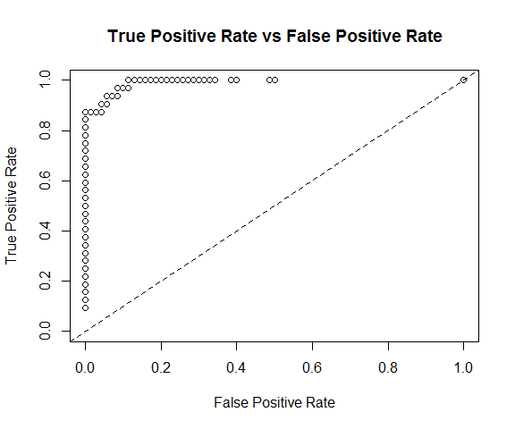
h2o.logloss(perf)
## [1] 0.1158835
h2o.mse(perf)
## [1] 0.03673598
h2o.auc(perf)
## [1] 0.990625
head(h2o.metric(perf))
## Metrics for Thresholds: Binomial metrics as a function of classification thresholds
## threshold f1 f2 f0point5 accuracy precision recall
## 1 1.000000 0.171429 0.114504 0.340909 0.715686 1.000000 0.093750
## 2 0.998333 0.222222 0.151515 0.416667 0.725490 1.000000 0.125000
## 3 0.998000 0.270270 0.187970 0.480769 0.735294 1.000000 0.156250
## 4 0.997222 0.315789 0.223881 0.535714 0.745098 1.000000 0.187500
## 5 0.996210 0.358974 0.259259 0.583333 0.754902 1.000000 0.218750
## 6 0.994048 0.400000 0.294118 0.625000 0.764706 1.000000 0.250000
## specificity absolute_mcc min_per_class_accuracy mean_per_class_accuracy
## 1 1.000000 0.257464 0.093750 0.546875
## 2 1.000000 0.298807 0.125000 0.562500
## 3 1.000000 0.335794 0.156250 0.578125
## 4 1.000000 0.369755 0.187500 0.593750
## 5 1.000000 0.401478 0.218750 0.609375
## 6 1.000000 0.431474 0.250000 0.625000
## tns fns fps tps tnr fnr fpr tpr idx
## 1 70 29 0 3 1.000000 0.906250 0.000000 0.093750 0
## 2 70 28 0 4 1.000000 0.875000 0.000000 0.125000 1
## 3 70 27 0 5 1.000000 0.843750 0.000000 0.156250 2
## 4 70 26 0 6 1.000000 0.812500 0.000000 0.187500 3
## 5 70 25 0 7 1.000000 0.781250 0.000000 0.218750 4
## 6 70 24 0 8 1.000000 0.750000 0.000000 0.250000 5
finalRf_predictions <- data.frame(actual = as.vector(test$classes),
as.data.frame(h2o.predict(object = rf_model,
newdata = test)))
##
|
| | 0%
|
|=================================================================| 100%
finalRf_predictions$accurate <- ifelse(finalRf_predictions$actual ==
finalRf_predictions$predict, "yes", "no")
finalRf_predictions$predict_stringent <- ifelse(finalRf_predictions$benign > 0.8, "benign",
ifelse(finalRf_predictions$malignant
> 0.8, "malignant", "uncertain"))
finalRf_predictions$accurate_stringent <- ifelse(finalRf_predictions$actual ==
finalRf_predictions$predict_stringent, "yes",
ifelse(finalRf_predictions$predict_stringent ==
"uncertain", "na", "no"))
finalRf_predictions %>%
group_by(actual, predict) %>%
dplyr::summarise(n = n())
## Source: local data frame [3 x 3]
## Groups: actual [?]
##
## actual predict n
## <fctr> <fctr> <int>
## 1 benign benign 62
## 2 benign malignant 8
## 3 malignant malignant 32
finalRf_predictions %>%
group_by(actual, predict_stringent) %>%
dplyr::summarise(n = n())
## Source: local data frame [4 x 3]
## Groups: actual [?]
##
## actual predict_stringent n
## <fctr> <chr> <int>
## 1 benign benign 61
## 2 benign uncertain 9
## 3 malignant malignant 26
## 4 malignant uncertain 6
finalRf_predictions %>%
ggplot(aes(x = actual, fill = accurate)) +
geom_bar(position = "dodge") +
scale_fill_brewer(palette = "Set1") +
labs(fill = "Were\npredictions\naccurate?",
title = "Default predictions")

finalRf_predictions %>%
subset(accurate_stringent != "na") %>%
ggplot(aes(x = actual, fill = accurate_stringent)) +
geom_bar(position = "dodge") +
scale_fill_brewer(palette = "Set1") +
labs(fill = "Were\npredictions\naccurate?",
title = "Stringent predictions")
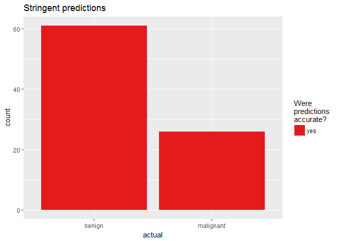
df <- finalRf_predictions[, c(1, 3, 4)]
thresholds <- seq(from = 0, to = 1, by = 0.1)
prop_table <- data.frame(threshold = thresholds, prop_true_b = NA, prop_true_m = NA)
for (threshold in thresholds) {
pred <- ifelse(df$benign > threshold, "benign", "malignant")
pred_t <- ifelse(pred == df$actual, TRUE, FALSE)
group <- data.frame(df, "pred" = pred_t) %>%
group_by(actual, pred) %>%
dplyr::summarise(n = n())
group_b <- filter(group, actual == "benign")
prop_b <- sum(filter(group_b, pred == TRUE)$n) / sum(group_b$n)
prop_table[prop_table$threshold == threshold, "prop_true_b"] <- prop_b
group_m <- filter(group, actual == "malignant")
prop_m <- sum(filter(group_m, pred == TRUE)$n) / sum(group_m$n)
prop_table[prop_table$threshold == threshold, "prop_true_m"] <- prop_m
}
prop_table %>%
gather(x, y, prop_true_b:prop_true_m) %>%
ggplot(aes(x = threshold, y = y, color = x)) +
geom_point() +
geom_line() +
scale_color_brewer(palette = "Set1") +
labs(y = "proportion of true predictions",
color = "b: benign cases\nm: malignant cases")
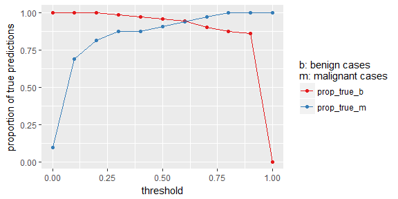
h2o.shutdown()
If you are interested in more machine learning posts, check out the category listing for machine_learning on my blog.
sessionInfo()
## R version 3.3.3 (2017-03-06)
## Platform: x86_64-w64-mingw32/x64 (64-bit)
## Running under: Windows 7 x64 (build 7601) Service Pack 1
##
## locale:
## [1] LC_COLLATE=English_United States.1252
## [2] LC_CTYPE=English_United States.1252
## [3] LC_MONETARY=English_United States.1252
## [4] LC_NUMERIC=C
## [5] LC_TIME=English_United States.1252
##
## attached base packages:
## [1] stats4 parallel stats graphics grDevices utils datasets
## [8] methods base
##
## other attached packages:
## [1] ggrepel_0.6.5 reshape2_1.4.2 h2o_3.10.3.6
## [4] corrplot_0.77 plyr_1.8.4 xgboost_0.6-4
## [7] randomForest_4.6-12 dplyr_0.5.0 caret_6.0-73
## [10] lattice_0.20-35 doParallel_1.0.10 iterators_1.0.8
## [13] foreach_1.4.3 tidyr_0.6.1 pcaGoPromoter_1.18.0
## [16] Biostrings_2.42.1 XVector_0.14.0 IRanges_2.8.1
## [19] S4Vectors_0.12.1 BiocGenerics_0.20.0 ellipse_0.3-8
## [22] ggplot2_2.2.1.9000
##
## loaded via a namespace (and not attached):
## [1] Rcpp_0.12.10 class_7.3-14 assertthat_0.1
## [4] rprojroot_1.2 digest_0.6.12 R6_2.2.0
## [7] backports_1.0.5 MatrixModels_0.4-1 RSQLite_1.1-2
## [10] evaluate_0.10 e1071_1.6-8 zlibbioc_1.20.0
## [13] lazyeval_0.2.0 minqa_1.2.4 data.table_1.10.4
## [16] SparseM_1.76 car_2.1-4 nloptr_1.0.4
## [19] Matrix_1.2-8 rmarkdown_1.4 labeling_0.3
## [22] splines_3.3.3 lme4_1.1-12 stringr_1.2.0
## [25] RCurl_1.95-4.8 munsell_0.4.3 mgcv_1.8-17
## [28] htmltools_0.3.5 nnet_7.3-12 tibble_1.2
## [31] codetools_0.2-15 MASS_7.3-45 bitops_1.0-6
## [34] ModelMetrics_1.1.0 grid_3.3.3 nlme_3.1-131
## [37] jsonlite_1.3 gtable_0.2.0 DBI_0.6
## [40] magrittr_1.5 scales_0.4.1 stringi_1.1.3
## [43] RColorBrewer_1.1-2 tools_3.3.3 Biobase_2.34.0
## [46] pbkrtest_0.4-7 yaml_2.1.14 AnnotationDbi_1.36.2
## [49] colorspace_1.3-2 memoise_1.0.0 knitr_1.15.1
## [52] quantreg_5.29